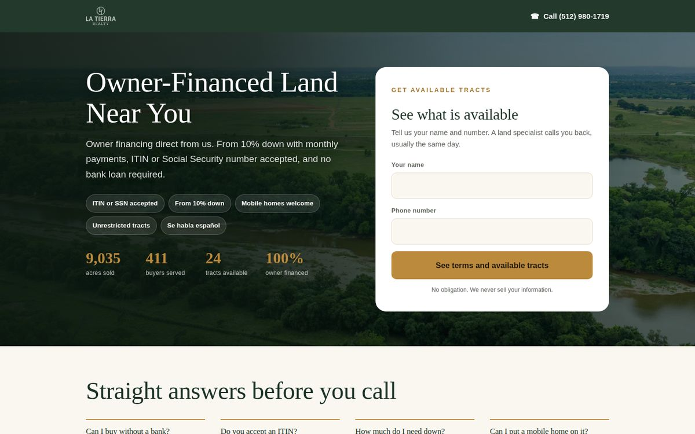
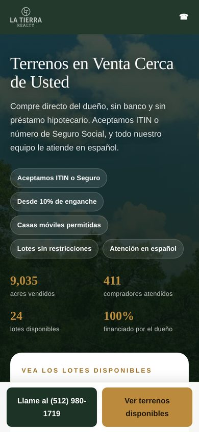
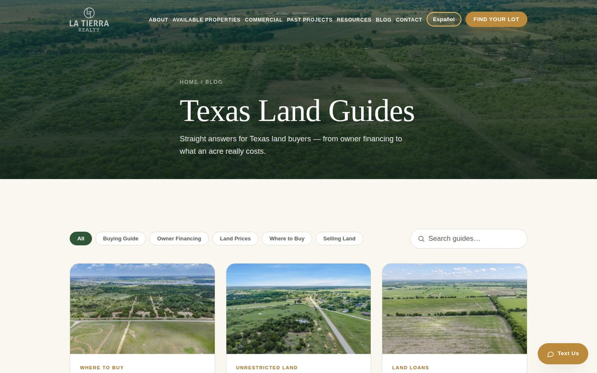
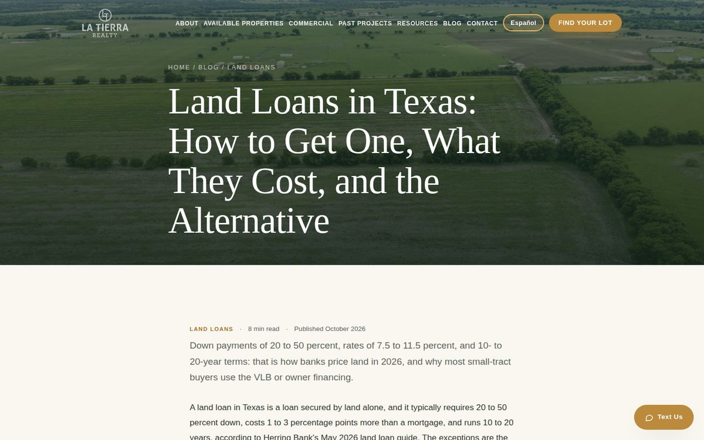

When I audited the account in September 2026, La Tierra had 253 leads tagged as Google Ads in Monday.com, and not one had ever reached Qualified. Paid leads were three times as likely to be marked Unqualified as the rest of the board (26.5% vs 8.3%). The old campaigns were paying $5.06 a click and $174.73 for each conversion, Google showed "Enhanced conversions not recording", and nothing connected an ad click to what happened in the CRM.
The website ran on Wix, the Spanish experience was thin for an audience that searches heavily in Spanish, and there was no way to tell which keyword, campaign or landing page produced a real buyer.
The work below covers the full chain: the site, tracking, ads, landing pages, CRM, reporting and content. Each piece feeds the next, so the ad platform optimizes toward leads that actually reach the sales team.
Moved latierratx.com off Wix onto a hand-coded, bilingual static site deployed from GitHub to Netlify, with serverless functions for lead capture.
?lang=es, so Spanish-speaking buyers get the whole site, not a translated homepage.The old Wix sitemap had 123 URLs. I mapped every one to its new home with 103 permanent 301 redirects, plus clean URLs without .html. Sold and retired properties redirect to the past-projects portfolio instead of returning a 404, so links and search equity carry over.
Built the site to load fast on phones and to be read correctly by Google and AI answer engines.
Connected every ad click to the CRM record it became, then sent CRM outcomes back to Google Ads so bidding learns from real leads, not page loads.
During launch, one buyer's browser blocked the Google tag. The lead reached the CRM, but Google Ads never saw it. I moved conversion reporting to the server: each paid lead's click ID is written to a Google Sheet that Google Ads Data Manager imports daily as "Lead Created (CRM)". I also created a higher-value "Qualified Lead (CRM)" conversion fed from CRM stage changes, so bidding can move toward leads the sales team qualifies.
The click ID and UTMs are captured on landing.
Name and phone first, then email, then property and timing.
Seven server checks before anything is written.
Monday.com item with campaign, keyword, click ID and landing page.
Lead and qualified-lead conversions imported for bidding.
Paused the old campaigns and rebuilt the account from scratch around language, device and intent. Leads got about 9× cheaper, and the program produced its first lot contract within three weeks.
| Campaign | Clicks | CTR | Avg. CPC | Form leads | Cost / lead |
|---|---|---|---|---|---|
| Spanish · mobile | 281 | 14.81% | $0.78 | 20 | $10.92 |
| English · mobile | 377 | 7.95% | $0.70 | 24.5 | $10.75 |
| English · desktop | 293 | 7.89% | $1.39 | 21 | $19.35 |
| Spanish · desktop | 60 | 23.35% | $3.46 | 5 | $41.53 |
| Pecan Peak · mobile | 98 | 8.01% | $1.73 | 3 | $56.57 |
| Pecan Peak · desktop | 39 | 5.92% | $2.34 | 1 | $91.27 |
| Eagle Ranch · mobile (test) | 40 | 10.70% | $2.03 | 0 | — |
| Rebuilt program | 1,188 | 9.23% | $1.21 | 74.5 | $19.30 |
| Old campaigns (paused) | 69 | 2.28% | $5.06 | 2 | $174.73 |
Google Ads data, Aug 31 – Oct 8, 2026. The rebuilt program launched Sep 16–17 and spent about $1.5K in this window. "Form leads" is Google's lead-form conversion; the CRM recorded 74 leads over the same period.
Seven paid landing pages that rewrite their headline to match the search, in English and Spanish, with a form built to capture the lead before the visitor drops off.
The first version asked for name and phone, then made everything else optional. 18 of the first 44 leads had no email, which cut off follow-up. I rebuilt all seven forms into three steps: name and phone (the lead is saved right away), then a required email, then optional property and timing. After the change, every new landing-page lead arrived with an email except one person who left at step two.


Every website and ad lead lands in the sales team's Monday.com board within seconds, tagged with where it came from, and screened for bots first.
Built a server-side lead filter with seven checks (origin, user agent and country, a hidden honeypot field, submit time under 3 seconds, fake names, spam text, repeat bursts). Clean leads go through, suspicious ones are flagged for the team and kept out of Google Ads conversion data, and obvious bots are dropped. There is no captcha, so real buyers face no extra friction.
A weekly report for the client's leadership that follows every paid lead from click to contract, by reading the CRM call notes lead by lead.
A 40-post bilingual content program built to rank in Google and to be quoted by AI answer engines, published on a steady cadence and pushed into Google's index.
Each new post goes into the sitemap and gets an indexing request in Google Search Console when it is published, so it reaches Google's priority crawl queue. Search Console showed 674 organic clicks from mid-August to early October and 49 pages indexed. One guide, on putting a mobile home on land, was flagged for a sharp jump in impressions.


Opened a second channel for land supply: a 5-email campaign asking local real estate agents to bring La Tierra landowners who want to sell.
Key milestones from the website relaunch through the first contract.
One blocked browser tag showed the browser-only setup was missing leads. Reporting conversions from the server, and sending CRM stages back to Google, gives bidding signals that match what the sales team sees.
Spanish mobile and Spanish desktop behaved like different businesses: about $10 per lead against $42. Without the split, the average would have hidden both.
Cost per lead said the campaigns were similar. Lead-by-lead CRM reading showed owner-financing searches produced half the live prospects, which changed where the budget went.
Download my resume or get in touch. I'm open to Director-level and senior growth leadership roles.
Download Resume (PDF) Contact Me
Earlier Work: Meta Ads, Social and Video
Before the rebuild, I ran La Tierra's marketing end to end on their original platform.
What I Ran